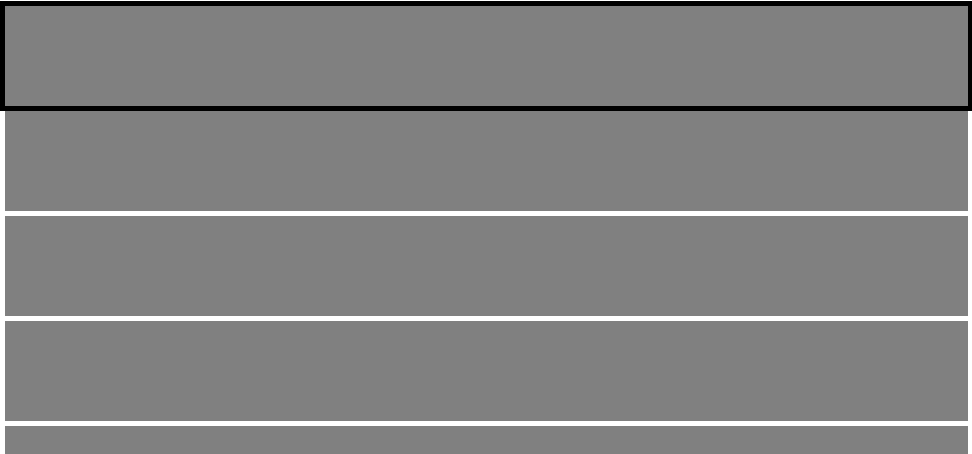

spatial-navigation-cursor
A simple spatial navigation cursor library

You can see how it works here.
Install
$ npm i spatial-navigation-cursor
Usage
Give an element "focused" class name. (You can use any other class name if you want.)
<main>
<div class="block focused"></div>
<div class="block"></div>
<div class="block"></div>
<div class="block"></div>
<div class="block"></div>
</main>
.__spatial-navigation-cursor__ is a class selector for the cursor. Write css code for the selector.
:root {
--transition-duration: .2s;
--transition-easing: ease-out;
}
.__spatial-navigation-cursor__ {
outline: 5px solid black;
transition: width var(--transition-duration) var(--transition-easing), height var(--transition-duration) var(--transition-easing), transform var(--transition-duration) var(--transition-easing);
}
Instantiate a new cursor manager and start it. When you give an element the focus class name, the cursor manager automatically moves the cursor to the element.
import CursorManager from 'spatial-navigation-cursor';
const cursorManager = new CursorManager({
root: document.body,
focusClassName: 'focused',
});
cursorManager.start();
window.addEventListener('keydown', (e) => {
e.preventDefault();
switch (e.key) {
case 'ArrowUp':
case 'ArrowDown': {
const focused = document.querySelector('.focused');
if (e.key === 'ArrowUp') {
const prev = focused.previousElementSibling;
if (!prev) return;
prev.classList.add('focused');
focused.classList.remove('focused');
} else {
const next = focused.nextElementSibling;
if (!next) return;
next.classList.add('focused');
focused.classList.remove('focused');
}
break;
}
}
});
API document
API document is here.